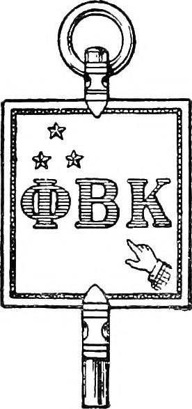

|
|
|
|
“The Whole Truth
Without Fear or Favor.”
|
|
|
THE WEATHER
Sunny today; A gentle breeze from the south. Highs around 60.
|
|
|
| No. 1. |
MADISON, WISCONSIN, SUNDAY, OCTOBER 27, 2024.
|
FREE COPY |
|
|
Badgers Relay
Experiences of
Trials, Olympics
Swimming and Diving Team
Cheered on Their Athletes
at Olympic Trials
Swam 100 Meter Backstroke
Thankful for Teammates
Cheers Were Best Reward
Cruised to Finals at Olympics
0.04 Seconds Away From Podium
Looks Forward To 2028
After a long day of travel and time spent putting the finishing touches on the game plan, the Wisconsin Badgers are ready for action. The stands are packed with cheering fans; the atmosphere is buzzing with electric anticipation; coaches and athletes are huddled together, preparing to kick off the competition. The U.S. Olympic Trials are about to begin.
After a devastating loss which cost him a spot at the 2021 Olympic Trials, Michael Long, a third year student at the University of Wisconsin and member of the Badgers’ Swimming and Diving Team, recounts his experience at the U.S. Olympic Swimming Trials in May 2024, alongside 24 of his teammates. Long specializes in the 100 and 200 meter backstroke, but was planning on qualifying for the Trials in the 100 meter. “It’s hard to do a 200 well earlier in the season,” said Long, “that’s something you really want to take a whole season to build up… So a lot of my cards were placed on the 100.” The pressure was on, however, his race didn’t go as expected. “I swam it, and I was maybe 0.2 [seconds] off of it, I was so close… I came back the same night to do finals, and I went a tiny bit slower than in the morning.”
The next day was Long’s final chance at qualifying for the Trials, but he would have to swim one of his strongest races to make it happen. He remembers being grateful to have one of his fastest teammates racing with him, pushing him to swim harder. “It was a blur,” Long said, when asked about the race, “I just remember I was trying so hard, I came into the wall and I looked up and our timing system isn’t showing the final time. It was
Continued on Page Two
|
Badger Hockey Season
Opens With Strong Start
Ever since the women's team opened the season with a 12-0 victory at home against Linden- wood, they have not lost a match. Ranked first in USCHO rankings, the Badgers beat Bemidji State 00-00 at the LaBahn in a sold out match yesterday. The men’s team won 3-2 in overtime in their first game, but have since been on the fritz. The Crease Creatures are not letting up for either team though and continue to bring the energy at the Kohl Center and LaBahn.
|
Many Freshman
Feeling Homesick
Family Weekend Goodbyes
Especially Tough With Much
of Semester Still Ahead
Experts Say Activities and
Clubs Help by Creating
a Routine
Seventy percent of college fresh- men say they experienced feelings of homesickness at some point dur- ing their first year, according to Rutgers Health. Most feel homesick in the first few weeks when they are adjusting to being away from home. Many students struggle to find where they belong on a large campus like the one here in Madison. “The beginning of the semester was really tough. I cried in the bathroom at the first football game because I missed home so much,” said freshman Grace Wright.
The midpoint of the semester is often when many first-year students feel overwhelmed and eager to visit home. After the exciting events of Family Weekend, many freshmen feel as though the end of the semester is nowhere in sight. “My parents and sister came this week- end and saying goodbye was really tough,” said freshman Michaela Baldwin. “Saying goodbye felt like the first time again.”
Experts say that the best way to combat homesickness is to create a family of friends. Getting involved in clubs and activities can also ease the transition by creating a routine and habits. It's easy for freshmen to believe that a visit home will ease their feelings of sadness but college counselors warn that this can just delay acclimating to living away from home. A focus on new friends and work can bridge the four weeks till Thanksgiving break.
|
UW-Madison Researchers Work With Sharks
In Attempt to Improve Cancer Medications
By WMTV.
|
Sharks don’t usually come to mind when you think of saving lives. But at the University of Wisconsin-Madison, students and faculty are learning from sharks everyday which is leading to advancements in cancer research. Six male nurse sharks live in a tank inside a laboratory on the UW-Madison campus. Originally from the Florida Keys, the sharks were moved to Wisconsin to help fight human cancer. “I love to be able to say that I work with them,” said UW-Madison graduate student Jayden
|
West. West says he’s worked with these sharks since they were brought to campus about three years ago. “It’s definitely one of the coolest animals you could use in this field and not one you expect when you’re not a wildlife biologist by trade at all,” he said. With the help of the sharks, West is studying drug delivery mechanisms for cancer. “We can use these shark antibodies to help traffic these drugs to the tumor and less of it into the body so
Continue Reading in WMTV
|
|
|
112th Homecoming
Celebrations Show
Lively Campus Spirit
Paint the Town, Fill the Hill,
and Homecoming Parade
Were Big Success
Community Brought Together
Everything From Alumni
Events to Live Music
Tailgates Showcased Badger Pride
Student Section Stayed Packed
Throughout Tough Game
UW-Madison’s Homecoming Week celebrations kicked off this year on October 20th with Paint the Town, a window decoration event at Memorial Union. Other events featured were Cocoa with HoCo and the UW Homecoming Blood Drive. Another spectacular sight was Fill the Hill, which has been a tradition for more than 40 years. Starting on Thursday, Bascom Hill became covered with plastic pink flamingos. For 24 hours, every gift made in support of UW-Madison added one more bird to the flock, transforming the hill into a pink frenzy. The party continued Friday with the Homecoming Parade, another cherished tradition that celebrated the vibrant student life at UW. The parade made its way down State Street, and ended on Lake Street around 7:30pm. Spectators listened to the UW Marching Band, watched floats of student groups, and cheered on Bucky Badger as they showed off their school spirit. Wynton Wright, president of the Wisconsin Homecoming Committee, says that he looks forward to the parade every year. “This is an amazing culmination of all the work the Committee puts together throughout the week, and it really brings the campus community together,” Wynton said. “In addition to this, we have a returning tradition of the Game Night this year, which we are very excited about. Having something for every- one during Homecoming Week is our continued goal.” There truly was something for everyone at the Block Party and Pep Rally, which featured a silent disco in Alumni Park, stargazing with telescopes, Wisco bingo, and performances by Fundamentally Sound, Wild Rumpus Circuits, and Optima Dance. The Multicultural Homecoming Yard Show was also a huge hit, with dance and comedy routines that showcased a celebration of culture. Alumni and students alike hosted networking events and a welcome reception. “Something that is unique to UW-Madison's Homecoming is how accessible our events and committee are,” Wright added. Homecoming events culminated on Saturday with tailgates and watch parties for the Wisconsin vs. Penn State game. The packed student section in the epitome of badger pride sang renditions of “Build Me Up Buttercup” and “Varsity” which echoed across the stands. Students remained to see the game until its very end, despite Wisconsin’s 28-13 loss.
|
Student Government Approves
Large Wisconsin Racing Budget
After Close Vote On Eligibility
|
No Reversal In Sight
As a River and Sea Die
By Voice of America.
TERMEZ, UZBEKISTAN, Oct. 18—The Amu Darya, one of two main rivers that for millennia fed the now rapidly shrinking Aral Sea, no longer does. Reporting by VOA along the length of the river in Uzbekistan has confirmed that every drop of water from the Amu Darya — formed by the conver- gence of the Vakhsh and Panj rivers in the mountains between Afghanistan and Tajikistan — is now diverted for human use. “The
Continue Reading in VOA
|
Ukraine Military
Manpower Crisis
Military Recruiters Drag
Men Avoiding Registration
for Military Service
Nightlife Continues Despite
Deadly Battles on Front,
Missile and Drone Attacks
By Radio Free Europe/ Radio Liberty.
UKRAINE, Oct. 18—The venues could hardly have been more conspicuous: a concert in the capital by the country's most popular rock group, a high-end resort, and a weekend wedding in downtown Lviv. Military recruiters showed up at these events, among many others across Ukraine in recent days, looking for men who had not registered for service under a long-debated and highly controversial military mobilization law that was adopted last spring. In some cases, the result was dramatic. Footage shot outside the Okean Elzy concert at Kyiv's Palace of Sports on October 11 showed officers dragging a man in civilian clothes across the pavement as he shouted in protest and onlookers chanted "Shame!" It was a glaring example of two worlds colliding in Ukraine, where deadly battles grind on along the 1,200-kilometer front line as Russia's full-scale invasion heads toward its fourth year with little sign of an end in sight, and where life — even nightlife — goes on despite the missile and drone attacks that hit cities and towns nationwide. "Half the country is crying and half the country is jumping [for joy]," Oleksiy Haran, a political science professor and research director at the Kyiv-based Democratic Initiatives foundation, told RFE/RL's Ukrainian Service, using a phrase that rhymes in Ukrainian to accentuate the divide between soldiers at the front and civilians living relatively carefree lives in wartime. In its existential effort to ward off Moscow's onslaught, Ukraine faces multiple challenges. A key city in the Donbas could fall soon as Russian forces advance with the
Continue Reading in RFE/RL
|
First Club Of Semester
Not to Have Leadership
Receive Payment
Club Allocated Over $165,000
Supply Costs Over $100,000
Travel Over $50,000
$543,360.91 Now Allocated
Not Including Wisconsin Racing,
Leadership Salaries Constitute
Over 72% of Allocated Funds
The Student Services Finance Committee (SSFC) voted 5-4 on Monday to approve Wisconsin Racing’s request to be funded by student segregated fees. Wisconsin Racing representatives Isabella Nedland, Julian Ildau-Tarmo and Lillian Zahn appeared in front of the Committee Thursday, October 17th, to present their budget proposal. Wisconsin Racing is UW-Madison’s Formula SAE Team and each year designs and builds two cars, one electric, and one combustion, in order to represent Badgers and compete against other teams from across the world.
Leading up to the contentious vote on Monday, representatives in SSFC, a student government body respon- sible for allocating over one million dollars of student segregated fees to student organizations, disagreed on the eligibility of Wisconsin Racing for funding. At question was whether Wisconsin Racing offered a service that was available to students upon request. Ildau-Tarmo clarified that as long as there is no legal boundary, such as required training before using welding equipment, students can request to be put on any project that they find interesting. Nedland gave examples including that of her own experi- ence in which students could join and quickly become involved in various hands-on projects even if they had limited experience or knowledge in those areas. After prolonged debate, four representa- tives remained unconvinced, and the group was voted eligible by a margin of one vote.
Wisconsin Racing proceeded to be allocated $165,334.91 in funding, including $100,852.48 for supplies and $50,462.44 for travel. The budget, the largest approved so far this year, was unusual since it was the first to not request salaries for students involved in the organi- zation. Not including Wisconsin Racing’s allocation, $273,773.25 of $378,026 allocated (just over 72% of all the money allocated so far this year) has been for the salaries of student organization leaders. In total, seven groups have been allocated a combined $543,360.91.
SSFC will meet on Monday, October 28th, in the 4th Floor Hearing Room of the Student Activity Center. Like all student government meetings, it is open to everyone.
|
|
|
|
|
2
|
THE WISCONSIN MESSENGER, SUNDAY, OCTOBER 27, 2024.
|
|
|
|
The Literary Editor will be pleased to receive original manuscripts, such as essays on literary, social, religious, and cultural topics; short stories; poetry; articles on University life, customs, or games; and communication on any matter of interest. These will be considered for publication and can be sent via form or email. Nothing of partisan character will be considered.
What Happens When We Stop Talking
Communication is arguably the most powerful weapon we wield as human beings. This universal skill allows us to express our thoughts, feelings, and ideas with our peers while also strengthening connections with friends and family members. This exchange of both accepted and controversial opinions is a crucial part of our society, as difficult conversations are often what results in compromise and understanding.
Today, there is a great divide between individuals with conflicting mindsets, arguably greater than ever. In more recent years, the segregation of those with opposing opinions has resulted in a lack of communication regarding difficult subject matter, with a primary example being politics. The resentment towards those on the converse side of the political spectrum is so strong in recent years, that it’s difficult to recognize our peers with clashing mindsets as fellow human beings.
Our stances on challenging topics are what humanizes us. Our thoughts and emotions result from where we have been, how we’ve been raised, and reflect where we plan to go in our lives. We don’t sit around and construct opinions solely to anger our peers. Every human experience is unique, directly resulting in various takes on complex topics.
Growing up in New York, I have observed a growing divide between people of the Democrat and Republican parties. In the most recent debate, the blatant disrespect each candidate gave the other was striking to me. I asked myself, “Have debates always been this way?” The answer is a definite no. I researched past presidential debates and one that struck me was the 1960 debate between Richard Nixon and John F. Kennedy. This debate demonstrates how far we have strayed from civilized, respectful human interaction. The candidates are often complimentary of one another and respectfully converse despite representing opposite sides of the political spectrum. This behavior strays so far from this year's presidential debates where there was a lot of bitterness.
I believe our willingness to converse as a society has been narrowed, and I feel the primary cause of this is fear. As a community, I feel we are afraid of having our opinions mocked, posted online, or gossiped about. It is difficult to thoroughly express one's school of thought without fear of being attacked by others of a different mindset. By the same token, we are afraid to hurt other people's feelings. I am proposing civilized, respectful conversation we can speak our mind and listen to each other.
Uncomfortable topics are common in politics. Does this mean we shouldn’t talk about them? Of course not! These disagreeable matters are essential to discuss because they affect American citizens. If we stop talking, new feats as a nation will be hard to achieve. Practicing civil debate makes it hard to demonize others who think differently from us, strengthening us to keep our sense of humanity. We need to keep talking, lest we become an entirely segregated society, unable to act civilly.
Kathleen McEvoy
Saturday Mornings on the Square
Saturday morning in Madison is incomplete without a visit to the Dane County Farmers’ Market. Spanning from April 13 to November 9, the market is a key component of the week for many families and students.
The past Saturdays have been filled with buzz as locals and students soak up the last weekends of warmth. Surrounded by the fall colors, the market spills down State Street, and forms a complete square around the Capitol, boasting over 150 vendors. The vendors create a warm sense of community and welcome. You can find fresh squeaky cheese curds, red radishes making for a delicious meal, or a fresh bouquet ready to blossom.
Possibly the most beautiful part of the market is the community it fosters. Whether you are a brand new freshman, like myself, or a family in Madison, the outing creates bonds. Being a student, I often find my peers searching for a group to attend with. Last weekend, I woke up on a sunny, autumn morning excited to meet up with my friends and walk to the market. We stopped on the corner of State and North Carroll to pick up our favorite bakery treat — cinnamon rolls. The local stand sells out every Saturday, and has developed loyal customers. Take it from me, and microwave your cinnamon rolls for 30 seconds, and then dig in. It makes the sweetness of your Saturday last the whole week! When you stroll to the next street of vendors, look out for honey. Looking to recover from the common fall cold, clover honey did the trick. Mixed in tea, the honey added the perfect, natural sweetness.
After you meander around the market, you must wrap up your morning by getting a bagel. Whether you are partial to a New York style bagel or new to the bagel connoisseur family, you can find many fresh, filling bagels on your way back from the capitol. My personal favorite is the everything bagel with scallion cream cheese!
From students to families, the Dane County Farmers’ Market is the perfect place to enjoy a Saturday morning, and the city of Madison would not be complete without it.
Daniela Vercollone

Phi Beta Kappa — Alpha of Wisconsin
The Nation's Oldest and Most Respected
Undergraduate Honors Society
|
Sunday, Nov., 3: 1:30-3:00 P.M.
Picnic Point Stone Entrance
|
|
Network and socialize with PBK members while basking in fall beauty and enjoying a birding trip hosted by the Friends of the Lakeshore Nature Preserve. Bring your binoculars or borrow a pair from the field-trip host as we scan the skies and tune in to the calls of migrating birds.
|
A Word About Ourselves
In publishing the first number of THE WISCONSIN MESSENGER, we have entered upon the arduous task of establishing a new paper, in a community not lacking in this commodity. We, nevertheless, enter- tain very sanguine hopes that the plan on which this paper will be conducted will garner public favor. Local newspapers can both waylay corruption through investigation and be springs of joy by capturing moments in peoples lives, from a science fair to a wedding. Articles create transparent communities where voters became informed, national events are contextualized, and local issues stand trial. It is very far from our intention to detract from the merits of the newspapers now in existence. But it is also true the policies of the present established papers have deprived readers of many of the advantages which traditionally resulted from reading the paper. As long as it remains justified to do so, THE MESSENGER will be free. Display advertisements by local firms that meet our standards of integrity and quality will be run throughout the paper, so that readers have reason to trust the entirety of what is in the paper and not just what is in our news columns. We will establish a class- ified advertisement section so that readers can easily buy, sell, and rent what they need from each other, secure jobs, capture life's special moments, and do so much more. Our reporting will be principled upon accuracy, reliability, simplicity, and impartiality using language that is parliamentary in good society. Of course, some time is necessary to get the machinery in working order and to build. We hope, however, at the very outset to show that we are disposed, and in time that we are able, to make as good a newspaper in all respects, and in many a much better one, than those hitherto offered. We know how much easier it is to say this than it is to do it; but we hope to show in due course that we have not failed in our promise or disappointed any just expectation. We shall seldom trouble our readers with our personal affairs; but these few words, at the outset, seemed called for and needed.
Miss Schnitz begins next issue a Question and An- swer advice column in T HE M ESSENGER. She cheerfully invites questions touching on any topic upon which her readers may desire help or information and will answer any questions she can. Address all let- ters to Miss Schnitz, c/o T HE W ISCONSIN M ESSENGER. Letters can be submitted by form or email. Miss Schnitz's answers to ques- tions reflect her own opinions and not neces- sarily the opinions either of the Administration or Editors of T HE M ESSENGER.
WAYNE'S
Barber Shop
Your Local Choice Since 1963.
Walk-Ins Only
DROP IN AND SEE US.
420 S. Park St. (608) 256-1623
|
Bacon Misses Bronze
By Fraction of Second
the longest five seconds of my life.” As he waited in the water, cheers erupted from the Badgers’ bench. Long’s Olympic Trials cut flashed on the board. “[The cheers were] the biggest reward for all the work I put in.” said Long. Long reflects that the greatest attribute of the Badger team may not be talent, which they have plenty of, but rather their drive and work ethic. “That drive is something that anyone can have,” remarked Long.
UW-Madison alumnus Phoebe Bacon qualified for the Olympic Games in 200 meter backstroke by finishing second to Minnesotan Regan Smith in the event at the
|
Swimming Olympic Trials in July. Bacon then trained in Croatia with the Team USA, coached by University of Florida’s Anthony Nesty. She entered the Olympics as one of the favorites to medal. In the Tokyo 2021 Olympics, Bacon finished in fifth place, and has only gotten better since then, including winning the 200 meter backstroke at the NCAA Championship meet in March of this year for UW-Madison.
Making it to the Olympic finals, Bacon entered as the top seeded swimmer, with a semifinals time of 2:07.32. However, Bacon faced some disappointment, as she missed out on the podium by only 4/100ths of a second. Kaylee Mckeown of Australia won gold, Regan Smith of U.S.A earned silver, and Kylie Masse of Canada beat out Bacon for bronze. She was the only Badger swimmer to make the U.S. Olympic team and has her sights set on the 2028 Olympic Games in Los Angeles.
|
Could anything be simpler…?
THAT'S what you will say the first time you place a want ad with T HE W ISCONSIN M ESSENGER.
Right at home or watching the sunset on Lake Mendota, you can submit your ad by form. Expert help is just an email away because THE MESSENGER worked to make it simple.
Give us a general idea of what you want and we'll do the rest. It's as simple as that. You get all the help you need because THE MESSENGER is staffed with capable students who can help you get things done quickly and at low cost.
Don’t hesitate because you never placed an ad before and, remember, nearly 50,000 students await your message.
The first 100 students to set up an account will start with 30 lines of classified advertising credit. The next 900 will be given 10 lines of credit. Don't miss out!
It's easy—and pleasant—to get things done with a want ad.
- Sublet Apartment
- Find Housemates
- Announce Events
- Recover Lost Items
|
- Announce Engagement
- Buy Bike
- Sell Textbook
- And So Much More
|
Do you like to write?
Are you earnest and sincere?
We’d love to have you.
At THE WISCONSIN MESSENGER we believe that the best journalism comes from observation and forged relationships.
While we believe in technology and have an amazing team of computer scientists, we also believe that reporting is best when done in-person with a notepad. In-person interviews don't just result in more accurate articles; you will have the chance to build relationships with some of the most interesting and impactful people in our community.
|
|
|
|
|
|
THE WISCONSIN MESSENGER, SUNDAY, OCTOBER 27, 2024.
|
3
|
|
|
|
Around the World in Headlines
|
Fentanyl Shipments
Bundled with Imports
Chinese Chemical Supplies
Ship Precursors in Regular
Commercial Packages
Massive Flow of Cheap Goods
Shipped From China Duty Free
Help Boxes to Disappear
By Reuters.
Oct. 1—The illicit fentanyl that kills tens of thousands of Americans a year is largely produced from Chinese chemicals cooked up in clandestine Mexican laboratories, according to U.S. authorities. This requires drug traffickers to transport the necessary chemicals halfway around the world. But cartels have found a clever way to smuggle these chemicals from China to Mexico – by first importing them
Continue Reading in Reuters
Police Arrest Three People
Supplying Pizzeria Cocaine
By British Broadcasting Corporation.
GERMANY, Oct. 22—Police have raided a pizzeria in western Germany which they alleged served customers a side of cocaine when they ordered item number 40 on the menu. Authorities were tipped off about the scheme in March by food inspectors, and drug squad officers began watching the restaurant,
Continue Reading in BBC
|
Inmates Enlist due
to Brutal Prisons
Must Choose Solitary
Confinement or Leave to
Fight in Ukraine
By Radio Free Europe/ Radio Liberty.
RUSSIA, Oct. 21—Increasingly op- pressive conditions inside Russian prisons are driving desperate inmates to enlist in the military to fight in Ukraine. Speaking to RFE/RL from behind bars in Russia, a Kyrgyz inmate said that many convicts enlist because they cannot endure such harsh prison conditions. Those who refuse to sign military contracts are kept in cold isolation cells and given little food or water, according to a lawyer who works for
Continue Reading in RFE/RL
Heat Lowers Quality, Yield
From Rice Farms
By Voice of America.
KAMIMOMI, JAPAN, Oct. 19—In the remote village of Kamimomi in Japan's western Okayama prefecture, a small group of rice farmers began their most recent harvest in sweltering heat, two weeks sooner than usual. The prefecture is called "the Land of Sunshine" because of its pleasant climate, but farmers working among the paddy fields and ancient rice terraces say that climate change is hurting the harvest of rice, long a cornerstone of Japan's diet. "Last year, an exceptional heat wave took the water out of the rice, which became small and thin," rice farmer Joji Terasaka said. "So I am worried about that this year because
Continue Reading in VOA
|
Many Chinese Firms In
Congo Mine Illegally
Exploit Artisanal Miners
Cut of Proceeds Taken
Profits Not Declared
Illegal Mining Destroys Fields
and Pollutes Rivers
says Marcheselli
By Agence France-Presse.
KITUTU, DRC, Oct. 24—Italian priest Davide Marcheselli has been fighting for years against Chinese companies illegally mining gold in the town of Kitutu in eastern Democratic Republic of Congo. He says mining has spoilt the town which lies in South Kivu province, polluting rivers and destroying fields. Hundreds of foreign companies, most of them Chinese-owned, mine gold in the mineral-rich province often without permits and without declaring profits, according to local authorities. For a long time, civil society groups and
Continue Reading in AFP
Generations Dig for Fortune
In Impoverished Panna
By British Broadcasting Corporation.
PANNA, INDIA, Oct. 13—“I feel sick if I don’t search for diamonds. It’s like a drug.” Prakash Sharma, 67, speaks about diamonds with a passion that has defined his life for
Continue Reading in BBC
|
|
Seeks to Boost Illegal Drug
Sales in Europe For Revenue
By Voice of America.
WASHINGTON, Oct. 22—Hezbollah is seeking to quickly boost sales of illegal drugs in Europe, former U.S. officials tell VOA, as the Iran-backed Lebanese militia reels from a weeks- long Israeli offensive that has destroyed and disrupted its key sources of cash in Lebanon. International law enforcement officials tell VOA, though, the U.S.-designated terror group faces some challenges in ramping up its European drug trafficking oper- ations. Hezbollah has plunged into a financial crisis since Israel began escalating its attacks on the group’s leaders and infrastructure in Lebanon in late September, according to U.S. and Lebanese sources who spoke with VOA earlier this month. Those attacks include Sunday’s Israeli airstrikes on branches of Hezbollah’s quasi-banking institution Al-Qard Al-Hassan in Hezbollah-dominated parts of Lebanon including the group’s southern Beirut stronghold. Israel’s offensive follows 11 months of limiting its responses to Hezbollah attacks on the country’s north in support of Iran-backed terror group Hamas, which invaded southern Israel from Gaza last October, sparking the year-old war in the Palestinian territory. The former U.S. officials, who spoke exclusively to VOA about Hezbollah’s international drug trafficking activities, said their sources in Europe have reported an uptick of interest by Hezbollah in selling illicit drugs on the continent this month. Hezbollah operates a
|
global criminal-financial network, with hubs in Africa and Latin America, according to the U.S. Congressional Research Service.
Continue Reading in VOA
Over 6 Million Acres Bought
From Hunting Stamp Sales
By The Virgin Islands Daily News.
GREENWICH, CT, Oct. 23—You don’t have to be a conservationist or a hunter to marvel at the portraits at the Bruce Museum in Greenwich, Connecticut. Each one is of a duck. Some show ducks flying — mergan- sers, pintails, mallards and elders. Some show ducks swimming. One shows a dog with a duck in its mouth. The portraits of the ducks (and that retriever) were drawn or painted for stamps. Not postage stamps, but federal duck stamps that hunters who want to shoot waterfowl are required to buy along with their state licenses. The revenue goes toward buying acreage for wildlife habitats. The govern-
Continue Reading in The Daily News
Photos of People and Animals
No Longer Permitted
By Radio Free Europe/ Radio Liberty.
AFGHANISTAN, Oct. 22—A photo- journalist who worked in Afghan- istan during the Taliban's 1996-2001 rule says the reinstated group's new ban on images of living things is unfeasible today. In the 1990s, the Afghan photojournalist, who asked to remain anonymous due to his
|
continued links to the country, recalls that “photos were com- pletely prohibited. The Taliban banned it. Even if there was a press conference or something, they said, ‘You cannot take pictures.’” But during the first Taliban era, in which punishments could be severe for even minor transgressions, taking photos of people was still a regular, risky occurrence for the photojournalist, along with a small number of his fellow Afghans working for Western news agencies. “We had small cameras, and when we went to do stories we would just go somewhere where there was no more Taliban, and we would take one or two shots, then quickly leave,
Continue Reading in RFE/RL
UN Agency Failed to Act
As Ethiopians Starved
By Reuters.
ETHIOPIA, Oct. 18—On a scorching March afternoon last year, an American aid worker was sitting on a stool in the town of Sheraro in the war-scarred Ethiopian region of Tigray, sipping traditional roasted coffee, when a red truck filled with sacks of grain came into view. The 50-kilo bags were stamped USAID – short for the U.S. Agency for International Development, the world’s largest donor of food assistance. The grain was supposed to help some of the millions of people in Tigray who depend on food donations to survive. But instead of heading to its intended destination — a camp filled with starving people — the red truck was moving in the wrong direction.
Continue Reading in Reuters
|
|
Music a Victim of
Taliban Return
Musical Instruments
Considered Un-Islamic
Over 20,000 Destroyed
By Radio Free Europe/ Radio Liberty.
AFGHANISTAN, Oct. 12—The Tali- ban announced in August that it had destroyed over 20,000 musical instruments in Afghanistan in the past year. The extremist group considers instruments un-Islamic and permits only unaccompanied singing. In interviews with RFE/RL, an exiled Afghan musician con- demned the move, while the head of the Afghanistan National Institute of Music said, "Music was the first victim of the Taliban's return."
Continue Reading in RFE/RL
Recycles Batteries In Four Day
Innovative "Wet" Process
By The Korea Herald.
KEPPENHEIM, GERMANY, Oct. 24—A two-hour drive southwest of Mercedes-Benz’s Stuttgart head- quarters, a new facility in the small town of Kuppenheim is poised to play a big role in the auto giant’s sustainability efforts. On Monday, brightly lit tanks, each glowing with a different hue, lined the walls of the 6,800-square-meter space, labeled with symbols for essential elements: lithium, nickel, cobalt and manganese. This is not a scene from a sci-fi movie, but a staged media presentation — the unveiling of Mercedes-Benz’s first in-house battery recycling plant. Manuel Michel, the company’s head of battery recycling, proudly described what makes this facility unique: “We are the first global automaker to establish our own
Continue Reading in The Korea Herald
Navajo Code Talker Helped
Allies Win World War II
By The Guardian.
Oct. 21—One of the last remaining Navajo code talkers who helped the US and its allies win the second world war died over the weekend, according to officials.The death of John Kinsel Sr, 107, on Saturday left just two living Navajo code talkers: his fellow US marines Thomas Begay and Peter MacDonald, who are both in their 90s. A longtime resident of Lukachukai, Arizona, near the New Mexico state line, Kinsel was one of about 400 members of the Indigenous Navajo nation who used their native Dine language to help create a code that allowed the US military to communicate securely during the second world war. The US’s enemies never broke the code before their defeat. Kinsel enlisted with the US marines in 1942, serving in their ninth regiment and third division during the battle of Iwo Jima against Japan. The code whose development Kinsel aided played a vital role in ensuring the security of operations that the American military conducted during campaigns in Iwo Jima, Guadalcanal and Okinawa, said a Navajo nation news release announcing his death. He told the Guardian in 2015 that for decades no one knew what his assignment had been during his service with the marines. “Not even the Navajo nation knew,” Kinsel said
Continue Reading in The Guardian
|
AI Fails to Detect
False Information
Often Trained on Low Quality
News Sources, Including
Propaganda
AI Sifts Through Knowledge;
Regulation and Trust in News
Reporters May Offer Solution
By Voice of America.
WASHINGTON, Oct. 21—When it comes to combating disinformation ahead of the U.S. presidential elections, artificial intelligence and chatbots are failing, a media research group has found. The latest audit by the research group NewsGuard found that generative AI tools struggle to effectively respond to false narratives. In its latest audit of 10 leading chatbots, compiled in September, NewsGuard found that AI will repeat misinformation 18% of the time and offer a nonresponse
Continue Reading in VOA
Hope to Advance Geothermal
Energy and Predict Eruptions
By British Broadcasting Corporation.
ICELAND, Oct. 17—I'm in one of the world's volcanic hotspots, northeast Iceland, near the Krafla volcano. A short distance away I can see the rim of the volcano's crater lake, while to the south steam vents and mud pools bubble away. Krafla has erupted around 30 times in the last 1,000 years, and most recently in the mid-1980s. Bjorn Guðmundsson leads me to a grassy hillside. He is running a team of international scientists who plan to drill into Krafla's magma. “We’re standing on
Continue Reading in BBC
Will Search For Keys to Life
On Jupiter's Moon Europa
By Voice of America.
CAPE CANAVERAL, FL, Oct. 14—A NASA spacecraft rocketed away Monday on a quest to explore Jupiter’s tantalizing moon Europa and reveal whether its vast hidden ocean might hold the keys to life. It will take Europa Clipper 5 1/2 years to reach Jupiter, where it will slip into orbit around the giant gas planet and sneak close to Europa during dozens of radiation-drenched flybys. Scientists are almost certain a deep, global ocean exists beneath Europa’s icy crust. And where there is water, there could be life, making the moon one of the most promising places out there to hunt for it. Europa Clipper won’t look for life; it has no life detectors. Instead, the spacecraft will zero in on the ingredients necessary to sustain life, searching for organic compounds and other clues as it peers beneath the ice for suitable conditions. SpaceX started Clipper on its 3 billion-kilometer (1.8 million-mile) journey, launching the spacecraft on a Falcon Heavy rocket from Florida’s Kennedy Space Center. An hour later, the spacecraft separated from the upper stage, floated off and called home. “Please say goodbye to Clipper on its way to Europa,”
Continue Reading in VOA
|
|
|
|